GE Exclusive Use Only
Direction 5440000, Rev# 5
Signa HDxt Service Methods
Module Version 3.0, Version Date 7/8/09
GE Exclusive Use Only |
| Required Persons | Preliminary Reqs | Procedure | Finalization |
|---|---|---|---|
| 3 | Not Applicable | 3-5 | Not Applicable |
This procedure applies to BRM Gradient Coil (P/N: 2220092) and should be implemented to prevent white pixels due to particles under the BRM support bracket from re-emerging. Refer to the flow chart (Illustration 1) on the next page for completing the solution implementation and ordering necessary equipment.
Illustration 1: White Pixel Equipment Ordering and Implementation Flow Chart
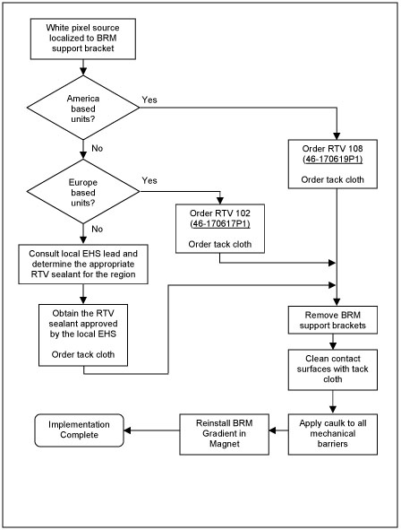
| NOTE: | To obtain the material MSDS, contact your local EHS leader. For regions outside of the Americas and Europe, consult the local EHS leader to determine the appropriate RTV sealant for the region. |
| Item | Qty | Effectivity | Part# | Manufacturer |
|---|---|---|---|---|
| RTV 102 Silicon Sealant, 2.8 FL OZ Tube (Europe) | 1 Tube for 2 BRM support brackets | - | 46-170617P1 | - |
| RTV 108 Silicon Sealant, 2.8 FL OZ Tube (Europe) | 1 Tube for 2 BRM support brackets | - | 46-170619P1 | - |
| Tack Cloth | 2 | - | Order from local supplier | |
| Blue Loctite #242 | 1 | - | 46-170684P2 | - |
| ||||
| Strong Magnetic Field! | ||||
| Ferrous materials can become dangerous projectiles in the presence of the magnetic field Produced by the Signa Magnet. | ||||
| Do not Bring any ferromagnetic tools or equipment into the magnet room. |
| ||||
| Dangerous Work Area! | ||||
| Use of heavy equipment for coil removal and replacement presents hazards to all personnel in the area. | ||||
|
| Condition | Reference | Effectivity |
|---|---|---|
Gradient coil is removed from the magnet using Defective Gradient Removal Procedure. | - | - |
Unfasten bolts and remove BRM support bracket from the gradient.
Clean the bolt threads by using the tack cloth to perform a back forth motion clockwise/counter-clockwise around the threads as shown in Illustration 2. Ensure any loose debris in the bolt threads is removed.
Illustration 2: Bolt Cleaning Procedure
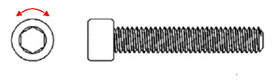
Clean underside of BRM bracket (2213167-3 or 2213168-3) by using the tack cloth as shown in Illustration 3. Make sure that the underside of the bracket is free of any metallic particles.
Illustration 3: BRM Support Bracket Cleaning Procedure
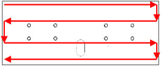
Install front support assembly (2213168-3) to front of gradient coil using four M10x40 screws (2174921-25), washers (2184009) and two drops of Loctite #242 (p/n 46-170686P3). Torque the M10x40 screws by hand so they are snug, then 1/2 turn to properly tighten.
Put on disposable protective gloves.
If the BRM bracket only uses 4 bolts then fill the 4 unused bolt holes with caulk as shown in Illustration 4. Wipe away excess caulk so that the caulk is flush with the bracket’s surface as shown in Illustration 5.
Illustration 4: Unused Bolt Hole Caulking Locations (if applicable)
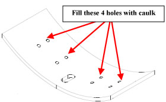
Illustration 5: Closeup of Unused Bolt Hole Filled with Caulk
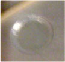
| NOTE: | Do not install rubber pads (see Illustration 6) before applying caulk to the periphery. Install rubber pads (if applicable) after caulk has been applied and has cured. |
Illustration 6: Rubber Pad Next to the BRM Support Bracket
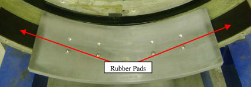
Apply caulk to the periphery of the bracket as shown in Illustration 7 by applying caulk to the tip of your finger and then running your finger along appropriate mating surfaces (use approximately 1/8 in. fillet of caulk). Dotted lines represent edges that are not visible from this view. Reapply caulk with your finger as needed. Illustration 8 (semi-circle), Illustration 9 (front edge), Illustration 10 (left edge), Illustration 11 (back edge), and Illustration 12 (right edge) provide a more distinct view of each of the mechanical barriers that are to be sealed with the caulk.
Illustration 7: Bracket Periphery Caulking Procedure
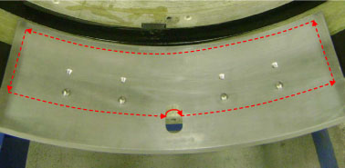
Illustration 8: Semi-circle Caulk Application
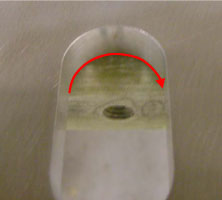
Illustration 9: Front Edge Caulk Application
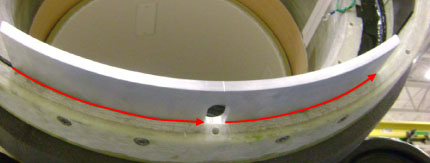
Illustration 10: Left Edge Caulk Application
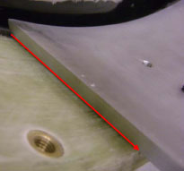
Illustration 11: Back Edge Caulk Application (Apply caulk to the bottom edge where the BRM bracket and gradient surface meet)
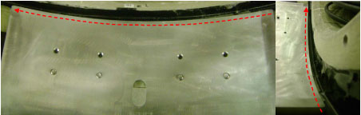
Illustration 12: Right Edge Caulk Application
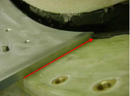
Apply a small amount of caulk to the periphery of the threaded bolts as shown in Illustration 13. The process is the same whether 4 or 8 bolts are used for the application.
Illustration 13: Threaded Bolt Caulk Application
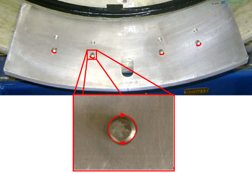
Allow caulk to cure naturally.
Install rear support (2213167-3) to the rear of the gradient in the same manner.
Reinstall rubber pads (if applicable).
Reinstall existing gradient coil using Gradient Coil Installation Procedure.
No finalization steps.